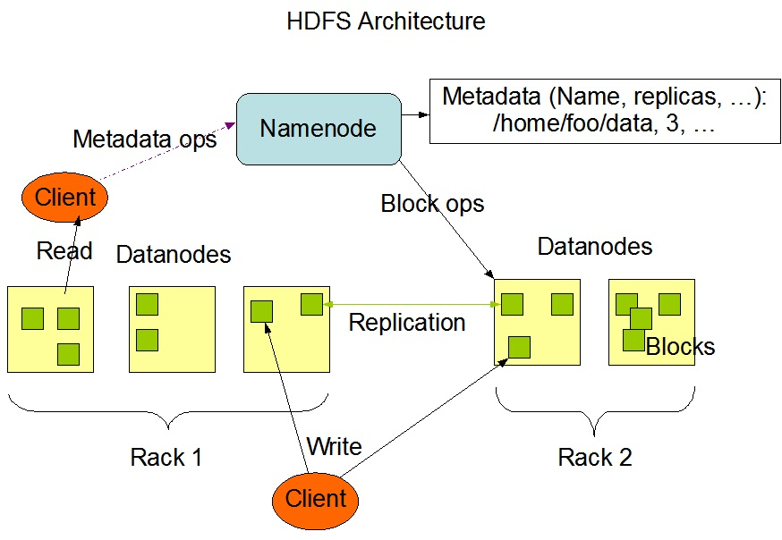
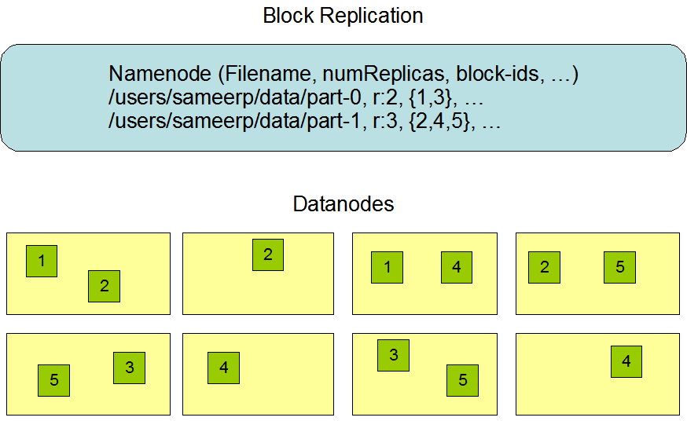
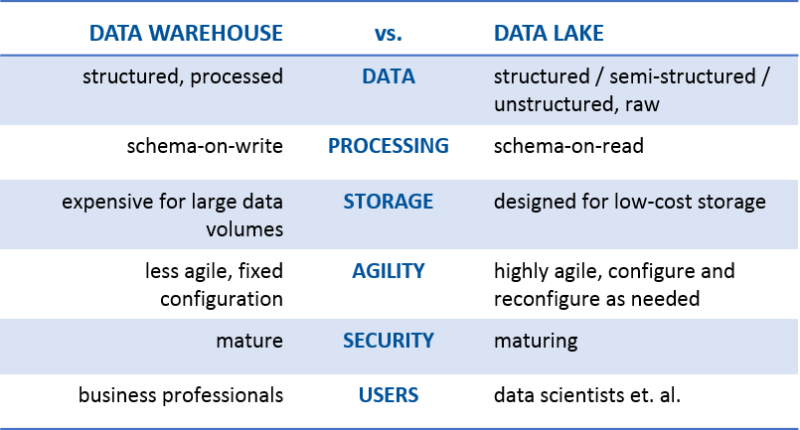
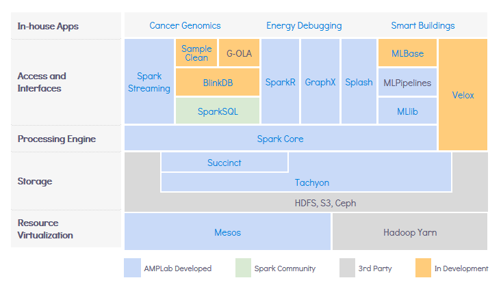
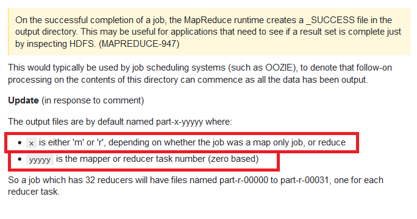
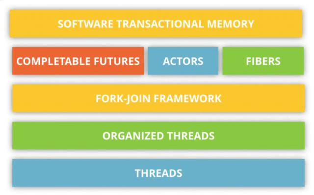

| macs.hw.ac.uk | Comparing Fork/Join and MapReduce | scalability |
| zetta.net mapr.com wintelguy.com |
Mean Time to Data Loss (MTTDL). The Inputs of the MTTDL Model:
|
scalability |
| vtagion.com | Scale Up (Vertical) and Scale Out (Horizontal) scaling | scalability |
| apache.org | HDFS Architecture   | hdfs |
| matthewrathbone.com | HDFS Cheat Sheet by Matthew Rathbone | hdfs |
| kdnuggets.com | Data Lake vs Data Warehouse  | hdfs |
| berkeley.edu | The Berkeley Data Analytics Stack (BDAS)  | big-data |
| matthewrathbone.com | Many map-reduce examples | map-reduce |
| platfora.com | Handling Skew in a Map-Reduce | map-reduce |
| github.com | The Hadoop Ecosystem | hadoop |
| apache.org tutorialspoint.com | Hadoop setup (Update Java home @ etc/hadoop/hadoop-env.sh) NameNode and DataNode start/stop: sbin/start-dfs.sh and sbin/stop-dfs.sh Yarn start/stop: sbin/start-yarn.sh and sbin/stop-yarn.sh | hadoop |
| acadgild.com saphanatutorial.com | How Yarn helped | hadoop |
| stackoverflow.com | Hadoop connection refused issue | hadoop |
| stackoverflow.com | How does partitioning work for data from files on HDFS | hadoop |
| apache.org datametica.com | Hadoop commands | hadoop |
| stackoverflow.com | Reason of _SUCCESS and part-r-00000  | hadoop |
| apache.org | Apache Parquet (columnar storage format) | hadoop |
| mapr.com puneethabm.in | Hive beeline commands | hive |
| wordpress.com berkeley.edu | Spark white paper and resources My dedicated Spark page | spark |
| alvinalexander.com stackoverflow.com | Akka example Spark is not using Akka anymore Akka uses Fiber; which is slightly different from Thread | actor |
| paralleluniverse.co zeroturnaround.com | Fiber based Actor framework: Quasar  | fiber |
| tachyon-project.org google.com berkeley.edu | Tachyon as storage | tachyon |
| github.com | Tachyon build scratchpad | tachyon |
| reactivemanifesto.org reactive-streams.org | Reactive menifesto and Reactive Streams | reactive |
| github.com | A curated list of machine learning frameworks, libraries and software | machine-learning |
| cloudera.com | cloudera | |
| informit.com | Big Data Adoption and Planning Considerations | reactive |